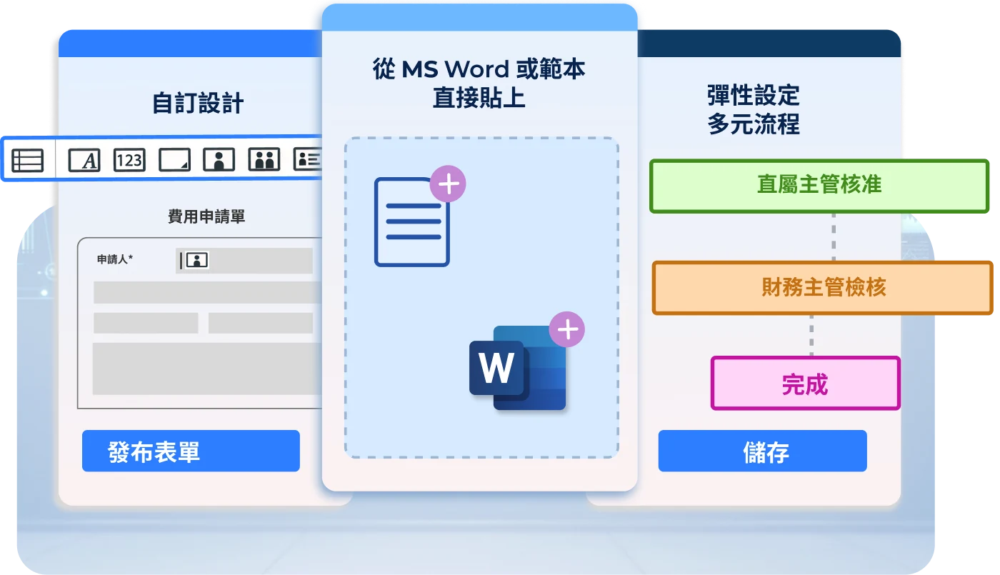
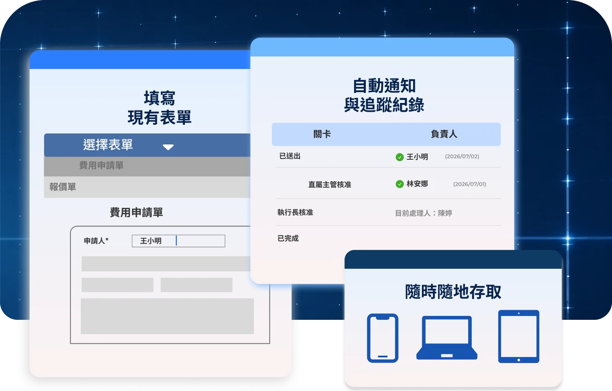
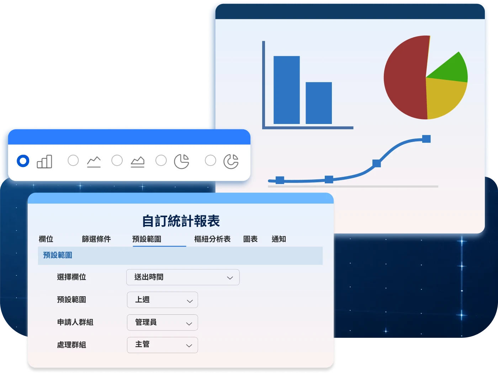
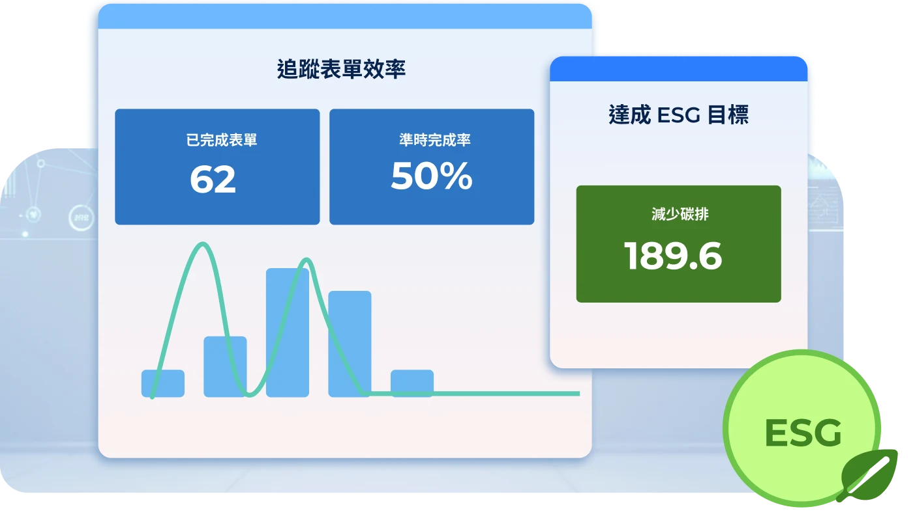
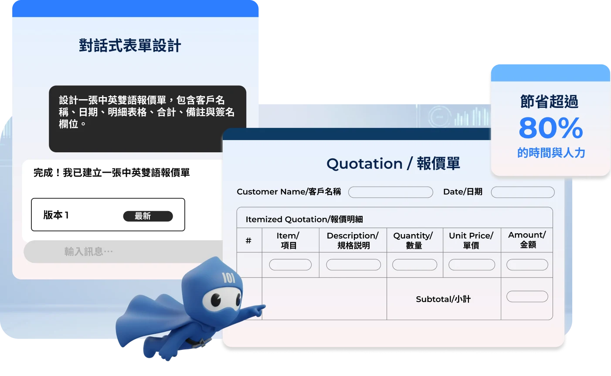
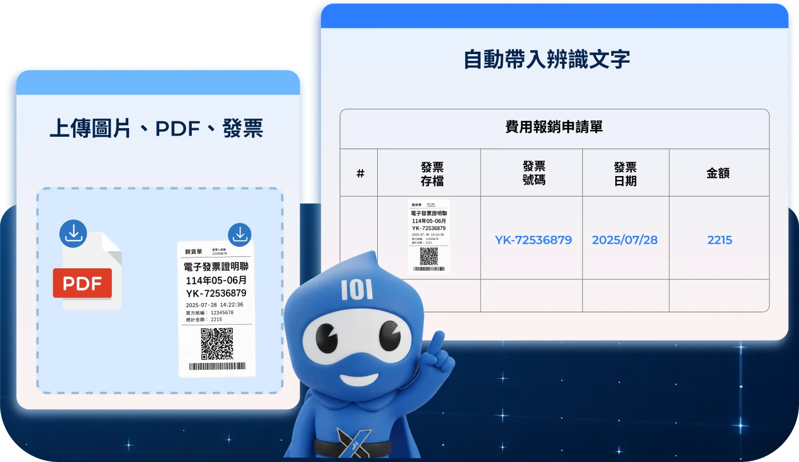
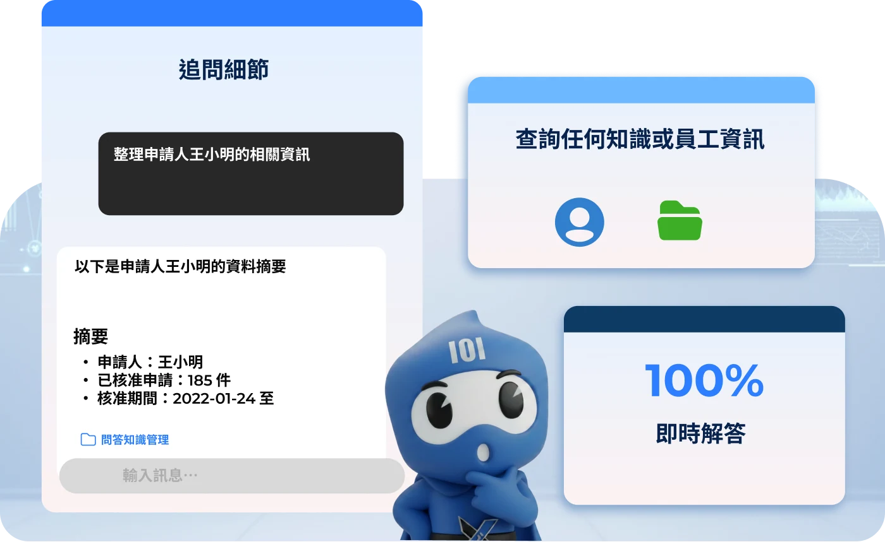

電子表單設計 (eForm Designer)
- 專利表單編輯器：提供多元且彈性的表單建立方式，可透過系統欄位配置、匯入既有 Word 文件內容，或直接套用預設範本，快速建立專屬電子表單，所見即所得。
- 彈性流程引擎：依據企業標準作業流程（SOP）需求，自由設計與配置簽核流程，滿足各類業務場景需求。
整合電子表單設計、流程自動化、報表管理與數據分析於單一平台，並支援多元 API 串接，無縫整合企業既有資訊系統，打造彈性數位流程。無需撰寫程式，即可快速將紙本作業數位化、標準化並自動化，大幅提升營運效率與流程治理能力。









業務流程管理（BPM）是協助企業自定義、自動化及優化流程，以提升營運效率、減少人工處理作業，並確保企業流程的一致性。
xNinja.企業流程管理結合 AI 技術，協助企業在數秒內建立專屬的電子表單，並透過 OCR 減少人工資料輸入，讓流程更快速、更有效率。
xNinja.企業流程管理支援多元的企業單據與簽核流程，涵蓋採購、財務與行政管理等面向，協助企業提升跨部門營運效率。